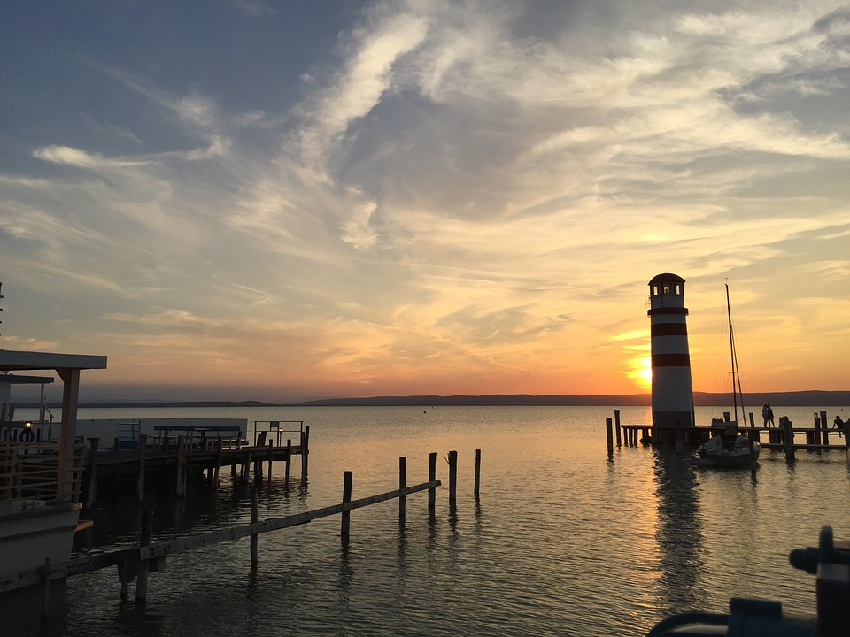
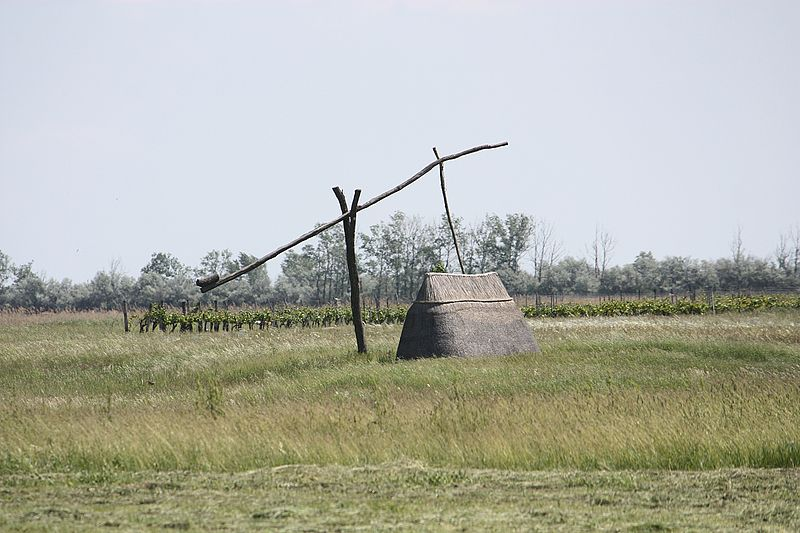
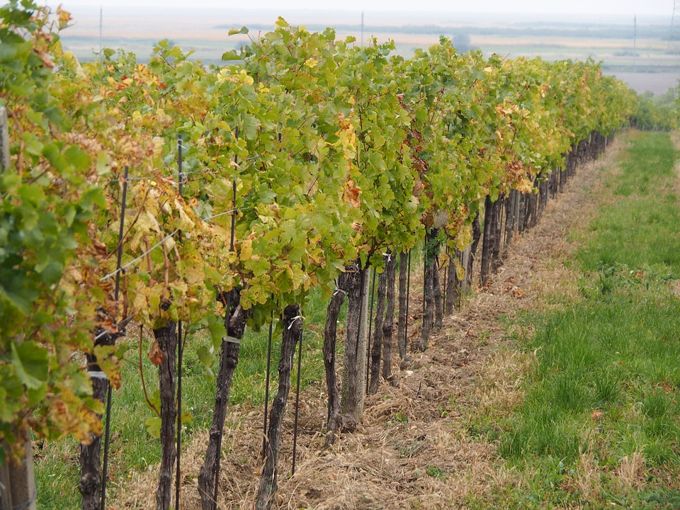

Burgenland
Geography
Burgenland is the seventh largest of Austria's nine states, or Bundesländer, at 3,962 km2 (1,530 sq mi). The highest point in the province is on the Geschriebenstein, whose summit is 884 metres (2,900 ft) above sea # level, but the highest point in Burgenland itself is 879 metres above sea level; the lowest point (which is also the lowest point of Austria) at 114 metres (374 ft), is in the municipal area of Apetlon.Burgenland borders the Austrian state of Styria to the southwest, and the state of Lower Austria to the northwest. To the east it borders Hungary. In the extreme north and south there are short borders with Slovakia and Slovenia respectively.
Burgenland and Hungary share the Neusiedler See, a lake known for its reeds and shallowness, as well as its mild climate throughout the year. The Neusiedler See is Austria's largest lake, and is a great tourist attraction, bringing ornithologists, sailors, and wind and kite surfers into the region north of the lake.

Schloss Esterhazy

Neusiedler See

Seewinkel

Weingarten